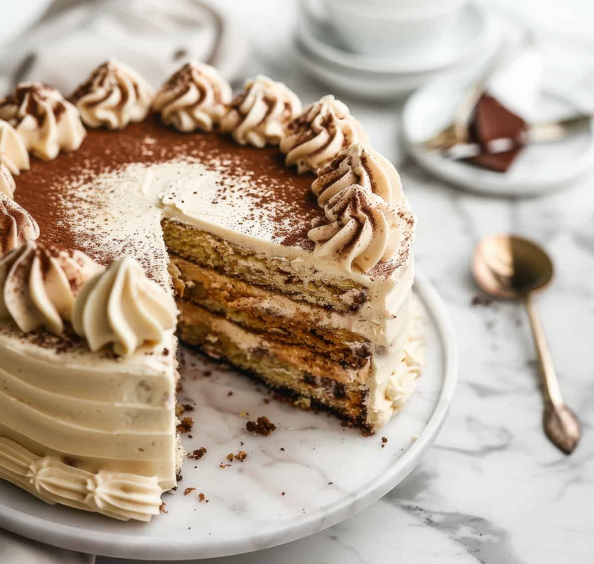
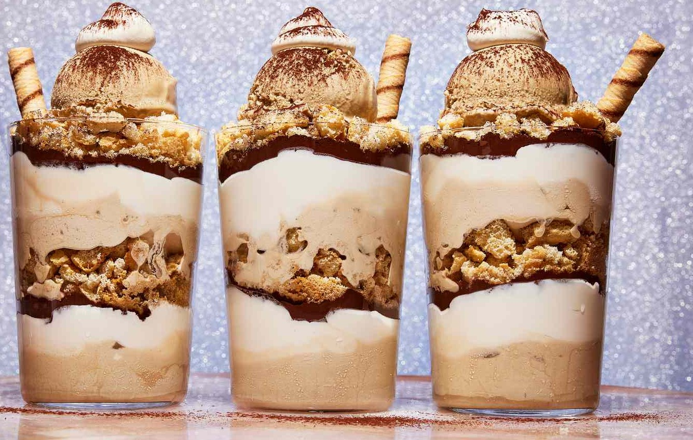

TIRAMISU
Tiramisu, which translates to “pick me up” in Italian, is a famous dessert believed to have originated in the Veneto region of Italy. Its name reflects its energizing ingredients, including coffee and cocoa. The exact origins are debated, but most agree it was developed in the 1960s or 1970s.
A popular claim is that it was created in the Le Beccherie restaurant in Treviso by pastry chef Roberto Linguanotto, possibly as a modern reinterpretation of older desserts like zabaione or coffee-based layered cakes. Over time, tiramisu gained worldwide fame, becoming a symbol of Italian desserts.
Classic Tiramisu Recipe
Ingredients

- For the Layers:
- 2 cups (480 ml) strong brewed espresso, cooled
- 3 tbsp coffee liqueur (optional, e.g., Kahlúa or Marsala wine)
- 24-30 ladyfingers (savoiardi biscuits)
- For the Mascarpone Filling:
- 3 large egg yolks
- 1/2 cup (100 g) granulated sugar
- 8 oz (250 g) mascarpone cheese, softened
- 1 cup (240 ml) heavy cream, whipped to stiff peaks
- For Garnish:
- Unsweetened cocoa powder
- Dark chocolate shavings (optional)
Instructions
- Prepare the Coffee Mixture:
- Brew the espresso and let it cool. Add the coffee liqueur or Marsala wine for extra flavor.
- Make the Mascarpone Cream:
- In a heatproof bowl, whisk egg yolks and sugar over a simmering water bath (double boiler) until thick and pale. Remove from heat and cool slightly.
- Fold in the mascarpone cheese until smooth.
- Whip the heavy cream to stiff peaks and gently fold it into the mascarpone mixture.
- Assemble the Tiramisu:
- Dip each ladyfinger quickly into the coffee mixture (don’t soak them; they should remain firm).
- Arrange a layer of dipped ladyfingers in the bottom of a rectangular dish or pan.
- Spread half of the mascarpone cream over the ladyfingers.
- Repeat with another layer of dipped ladyfingers and the remaining mascarpone cream.
- Chill and Garnish:
- Cover and refrigerate for at least 4-6 hours, preferably overnight, to allow the flavors to meld.
- Before serving, dust the top generously with cocoa powder and add chocolate shavings if desired.
- Serve:
Tips for Perfect Tiramisu

- Use High-Quality Ingredients:
- Choose authentic Italian mascarpone, fresh eggs, and real espresso for the best flavor.
- Don’t Oversoak the Ladyfingers:
- Dip the biscuits quickly in the coffee mixture to avoid a soggy texture.
- Chill Well:
- Tiramisu improves with time. Allowing it to chill overnight deepens the flavors and ensures a firm consistency.
- Stabilize the Cream:
- If you’re worried about the cream being too soft, add a teaspoon of gelatin dissolved in warm water to the mascarpone mixture.
- Non-Alcoholic Version:
- Skip the liqueur and add a little vanilla extract to the mascarpone cream for a family-friendly dessert.
- Experiment with Layers:
- Add a layer of grated dark chocolate or sprinkle crushed nuts between the layers for added texture and flavor.
Best Season to Bake Tiramisu
Tiramisu is a year-round dessert, thanks to its no-bake nature and refreshing flavor. However, it is especially popular in:
- Summer:
Its chilled, creamy texture makes it a refreshing treat on warm days.
- Winter Holidays:
The coffee and cocoa flavors pair wonderfully with holiday meals, and it’s an elegant dessert for festive gatherings.
Whether enjoyed as a summer delight or a rich winter indulgence, tiramisu is a timeless dessert that fits any season.